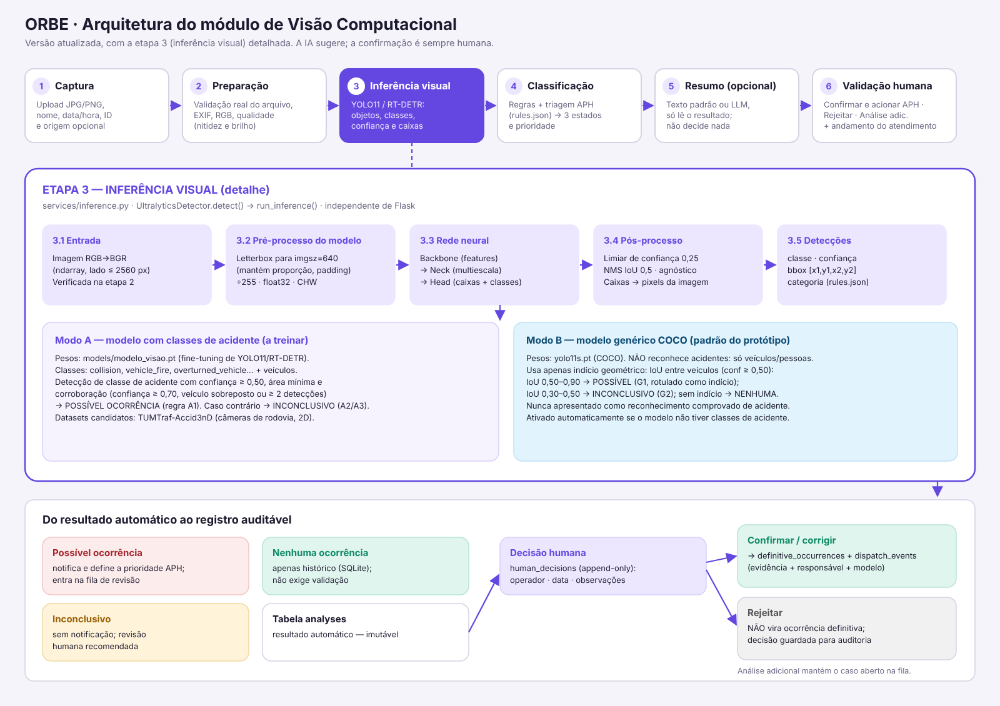
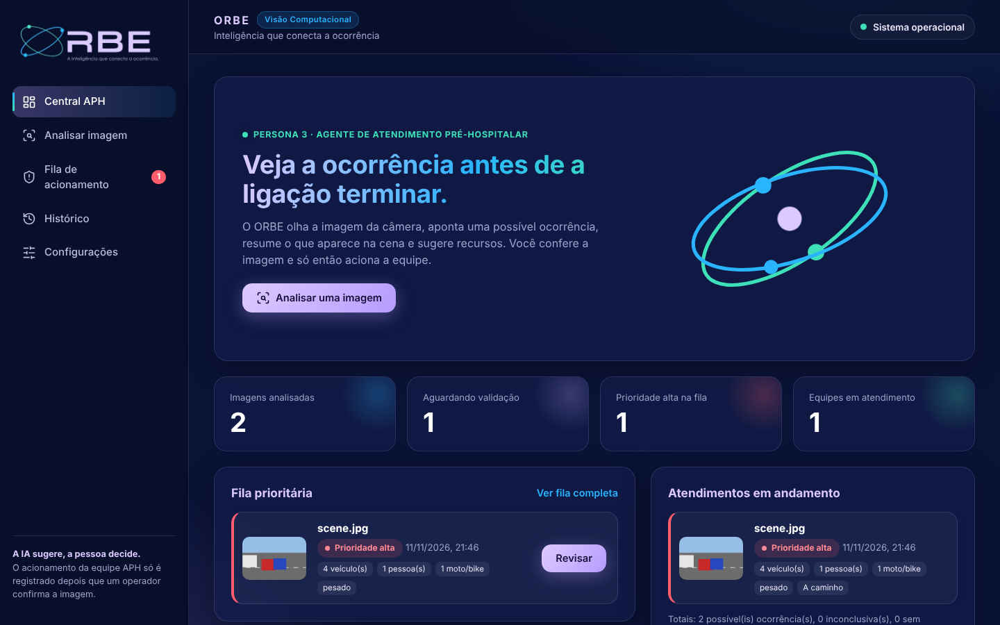
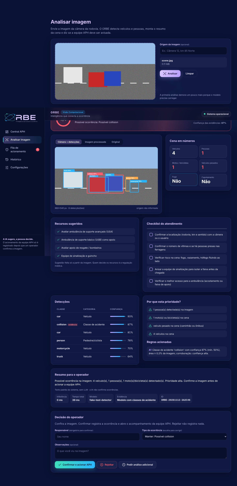
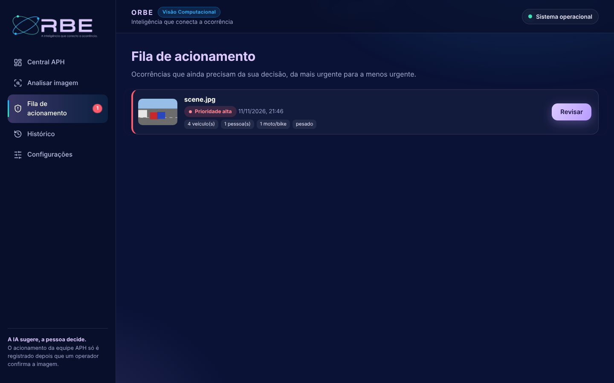

O ORBE é um copiloto de IA para apoiar operações rodoviárias da Motiva. Esta etapa implementa o módulo de visão computacional: recebe uma imagem de câmera, executa inferência com um modelo de detecção de objetos, aplica regras de classificação e informa se o operador deve ser notificado de uma possível ocorrência. O princípio central, herdado da arquitetura anterior, é human-in-the-loop: a IA sugere e a pessoa decide.
A entrega anterior recebeu três observações do professor: (i) falta de relatório explicativo; (ii) diagrama superficial, sobretudo na etapa 3 (inferência visual); (iii) ausência de modelos candidatos. Este documento responde a (i); o diagrama da seção 7 responde a (ii); a seção 5 responde a (iii).
Implementar um protótipo executável localmente que: receba JPG/PNG; pré-processe; execute inferência real; organize detecções; classifique em possível ocorrência, nenhuma ocorrência ou inconclusivo; indique notificação; permita confirmar, rejeitar ou solicitar análise adicional; e mantenha histórico auditável, separando o resultado automático da decisão humana.
| Camada | Tecnologia | Uso |
|---|---|---|
| Back-end | Python, Flask | Rotas HTTP, fábrica de aplicação, serviços separados |
| IA | Ultralytics (YOLO11/YOLOv8, RT-DETR) sobre PyTorch | Detecção de objetos |
| Imagens | OpenCV, NumPy, Pillow | Leitura, verificação, qualidade, desenho das caixas |
| Métricas | scikit-learn | tools/evaluate.py: precisão, recall, F1, matriz de confusão |
| Armazenamento | SQLite (stdlib) + diretórios uploads/ e processed/ | Análises, decisões humanas, ocorrências definitivas |
| Front-end | HTML5, CSS3, JavaScript puro; ícones Lucide embutidos (SVG) | Interface sem dependências externas (exceto a fonte, com fallback) |
| Testes | pytest | 75 testes |
As informações abaixo vêm da planilha da etapa anterior (pesquisa de 28/10/2026) e não foram reverificadas; disponibilidade, formato e licença precisam ser conferidos antes de qualquer download ou treino. Nenhum dataset foi baixado nesta etapa.
| Dataset | Tipo / câmera | Anotações (segundo a planilha) | Adequação ao protótipo (imagem única) |
|---|---|---|---|
| TUMTraf-Accid3nD | Câmeras rodoviárias + LiDAR; acidentes reais | Caixas 2D/3D, máscaras, IDs | Mais adequado para ajustar um detector com classes de acidente (câmera de rodovia, caixas 2D). Requer conversão para o formato YOLO e conferência da licença. |
| UA-DETRAC | Câmeras fixas, vídeos de tráfego | Caixas de veículos, iluminação, oclusão | Útil para robustez na detecção de veículos em câmera fixa; não contém acidentes. |
| BDD100K | Dashcam; cena rodoviária geral | 10 tarefas de percepção | Complemento para a cena; domínio dashcam; volume grande (≈1,8 TB de vídeo). |
| RDD2022 | Imagens de pavimento | Tipos de dano | Outra tarefa (dano no pavimento); fora do escopo desta etapa. |
| DoTA | Dashcam; anomalias | Tempo da anomalia, classe, caixas | Vídeo e dashcam: adequado a um módulo temporal futuro, não à imagem única. |
| AI City 2021 Track 4 | Câmeras de tráfego, 410p | Intervalos de tempo da anomalia (sem caixas) | Avaliação temporal (início/fim); sem caixas não treina detector. |
| ACCIDENT | Câmeras de monitoramento (reais e sintéticos) | Tempo, local e tipo da colisão | Promissor para câmera fixa; verificar acesso e licença; trabalho recente. |
| Nexar | Dashcam; colisão/quase-colisão | Rótulos do evento, horários | Previsão de risco em vídeo; domínio dashcam; não confirma acidente. |
Conclusão sobre os datasets: não são diretamente compatíveis entre si (dashcam × câmera fixa × pavimento; vídeo com marcação temporal × imagens com caixas). Para um detector de imagem única com classes de acidente, o candidato principal é o TUMTraf-Accid3nD, com UA-DETRAC como apoio de veículos. Os demais ficam para uma etapa temporal.
| Modelo | Tarefa | Vantagens | Limitações | Compatibilidade com os datasets | Adequação |
|---|---|---|---|---|---|
| YOLO11 (Ultralytics) | Detecção (caixas) | Rápido, ecossistema maduro, treino personalizado simples, várias escalas (n/s/m/l/x) | Pesos pré-treinados genéricos (COCO) não conhecem acidentes; licença AGPL-3.0 (verificar para uso comercial) | Formato YOLO; conversão de datasets com caixas 2D (TUMTraf, UA-DETRAC, BDD100K) | Alta — escolhido |
| YOLOv8 | Detecção | Mesma API; muito documentado | Geração anterior à YOLO11 | Idem | Alta (alternativa equivalente) |
| RT-DETR | Detecção baseada em Transformer | Sem NMS no projeto original; boa precisão; disponível via Ultralytics | Tende a exigir mais memória/dados; ajuste mais sensível | Idem (formato YOLO via Ultralytics) | Média-alta — suportado por configuração (ORBE_MODEL_FAMILY=rtdetr) para comparação |
| ResNet | Classificação de imagem inteira | Simples; bom para "cena com/sem ocorrência" | Não localiza objetos; não deve ser usado como detector; sem evidência visual por caixa | Requer rótulos por imagem | Baixa como principal; possível complemento de triagem (não implementado) |
| Modelos temporais (ex.: CNN+LSTM, transformers de vídeo, rastreamento + regras) | Eventos em sequências | Capturam eventos que não aparecem em um quadro (veículo parado, queda de velocidade) | Exigem vídeo, anotações temporais e mais computação | DoTA, AI City, Nexar, ACCIDENT | Trabalho futuro |
Foi escolhido YOLO11 (Ultralytics) como detector principal porque: (a) devolve classe, confiança e caixa, necessárias para as evidências visuais e a interface; (b) permite treinamento personalizado com datasets de caixas 2D; (c) é rápido para uso interativo; (d) o mesmo código suporta RT-DETR e YOLOv8. O classificador ResNet não foi usado como detector. E um detector de veículos não é tratado como prova de acidente: por isso o sistema distingue dois modos (seção 10). No protótipo, sem pesos treinados em acidentes, o modelo carregado é o yolo11s.pt (COCO), que apenas detecta veículos e pessoas.

ORBE/ app.py · config.py · rules.json services/ image_processing · inference · occurrence_classifier · analysis_service · llm_service routes/ main_routes · analysis_routes · history_routes database/ db · models templates/ · static/ · tools/ · tests/
Cada responsabilidade está em um módulo: image_processing (arquivos e imagens), inference (modelo), occurrence_classifier (regras, função pura), analysis_service (orquestra 5.1→5.6), database (persistência) e routes (HTTP). O detector é injetável (create_app(detector=...)), o que permite testar sem o modelo.
imgsz=640 (mantém a proporção, com bordas), converte para RGB/CHW e normaliza para [0,1] (÷255). Esses passos ficam dentro da biblioteca; o ORBE registra o imgsz usado.agnostic_nms (evita o mesmo veículo contado como duas classes); caixas devolvidas em pixels da imagem analisada.rules.json; são ordenadas por confiança. O tempo de inferência é medido só nesta etapa.rules.json, ativa-se o modo "acidentes"; caso contrário, "genérico".O adaptador do Ultralytics foi verificado por testes contra um módulo ultralytics simulado que imita a API; não foi executado com o modelo real no ambiente de desenvolvimento.
Verificação de extensão (JPG/JPEG/PNG), tamanho (padrão 10 MB), nome seguro (secure_filename; o arquivo é salvo como o ID da análise), integridade real (PIL.verify, conteúdo deve ser JPEG ou PNG, mesmo com extensão correta), proteção contra imagens gigantes (50 MP), lado mínimo de 32 px, correção de orientação EXIF, conversão para RGB (remove canal alfa) e para BGR, e redução se o lado exceder 2560 px. Calculam-se também a nitidez (variância do Laplaciano) e o brilho médio, usados pelo classificador.
A função classify() é independente e devolve um de três estados, com as regras acionadas (reasons). Os limiares ficam em rules.json.
| Regra | Modo | Condição | Resultado |
|---|---|---|---|
| A1 | Acidentes | Classe de acidente com conf ≥ 0,50 e área ≥ 0,2% da imagem, e corroboração: conf ≥ 0,70, ou veículo sobreposto, ou ≥ 2 detecções | Possível ocorrência (notifica) |
| A2 / A3 | Acidentes | Classe de acidente sem corroboração (A2) ou com conf entre 0,25 e 0,50 / área muito pequena (A3) | Inconclusivo |
| G1 | Genérico | Dois veículos (conf ≥ 0,50) com IoU entre 0,50 e 0,90 (acima disso é considerado duplicata) | Possível — rotulado como indício geométrico |
| G2 | Genérico | IoU entre 0,30 e 0,50 | Inconclusivo |
| Q1 | Ambos | Imagem pouco nítida, escura ou estourada (sem evidência de ocorrência) | Inconclusivo |
| N0 / N1 | Ambos | Nenhuma detecção / sem veículos | Inconclusivo (não se pode afirmar que a cena é normal) |
| N2 | Ambos | Veículos detectados e nenhuma regra disparou | Nenhuma ocorrência (não comprova ausência) |
A "confiança" exibida é a confiança do modelo nas detecções que sustentam o resultado (não uma probabilidade de acidente). Em modo genérico, a sobreposição de veículos também ocorre por oclusão e perspectiva, de modo que G1 produz falsos positivos esperados; a validação humana existe para isso. As regras são heurísticas definidas pelo grupo, ainda não calibradas com dados reais.
Por padrão, notifica-se apenas quando o resultado é "possível ocorrência"; casos inconclusivos entram na fila de revisão sem notificação (configurável em rules.json → notification). A interface destaca o alerta e exibe, no cabeçalho, o número de casos aguardando validação. O prototipo não envia mensagens externas: "notificar" significa alertar o operador na interface.
O ORBE foi orientado ao fluxo da Persona 3. Depois da classificação, services/aph_triage.py monta um resumo de triagem a partir das detecções com confiança ≥ 0,40: contagem de veículos, pessoas, motos/bicicletas e veículos pesados, e indícios de fogo ou capotamento (estes dois só existem se o modelo tiver essas classes). A prioridade é alta quando há possível ocorrência e pelo menos um agravante (pessoa, duas rodas, veículo pesado, fogo, capotamento ou ≥ 3 veículos), média quando há possível ocorrência sem agravantes, verificar quando o resultado é inconclusivo e sem acionamento quando não há indício. A tela sugere recursos (por exemplo, USA/USB, resgate, sinalização) e um checklist de confirmação da cena. As sugestões são indicativas, baseadas só na imagem; a decisão sobre recursos é da regulação médica. O sistema não estima gravidade clínica nem número de vítimas: "pessoas detectadas" é apenas uma contagem de caixas.
Ao confirmar, o operador registra o acionamento e o sistema abre o acompanhamento do atendimento (dispatch_events): equipe acionada → a caminho → no local → concluído, em ordem obrigatória e com horário e responsável. Os limiares da triagem ficam em rules.json → aph e ainda não foram calibrados com a equipe de APH.
O operador pode confirmar (opcionalmente corrigindo o tipo), rejeitar ou solicitar análise adicional. Regras: confirmar exige o responsável; a decisão é gravada em human_decisions (append-only), separada de analyses, que nunca é alterada; confirmada/corrigida cria um registro em definitive_occurrences com evidência, responsável, data e modelo; rejeitada nunca cria registro definitivo; decisões finais são imutáveis; análise adicional mantém o caso aberto. Resultados "sem ocorrência" não exigem validação.
A interface foi pensada para o operador que apoia o APH e segue a identidade da logo: fundo navy, lilás como cor principal, azul e verde das órbitas, e cores de alerta só em estados operacionais. Telas: Central APH (indicadores reais do banco, fila prioritária e atendimentos em andamento), Analisar imagem (upload com varredura animada durante o processamento), resultado com anel de prioridade, imagem com caixas desenhadas em tempo real, contagens da cena, recursos sugeridos, checklist, motivos das regras, resumo e decisão do operador com linha do tempo do atendimento, Fila de acionamento (ordenada por prioridade), Histórico com filtros e Configurações (somente leitura). As animações são em CSS e JavaScript puro, sem bibliotecas, e respeitam a preferência de movimento reduzido do sistema.



75 testes automatizados (python -m pytest -q), todos aprovados no ambiente de desenvolvimento. Usam um detector de teste roteirizado e imagens sintéticas; verificam a lógica, não o modelo.
| Requisito | Cobertura |
|---|---|
| Imagem com possível ocorrência | Fluxo completo nos dois modos; corroboração; notificação |
| Imagem sem ocorrência | Resultado "nenhuma", sem validação exigida |
| Imagem inconclusiva | Sem detecções, imagem borrada/escura/estourada, evidência fraca, sobreposição moderada |
| Arquivo inválido | Extensão proibida, arquivo corrompido ou truncado, formato falso com extensão válida, imagem pequena, arquivo vazio/ausente, acima do limite; nada fica em disco |
| Erro durante a inferência | Erro do modelo (500), modelo indisponível (503), erro inesperado sem vazar detalhes; nada gravado |
| Confirmação / rejeição humana | Registro definitivo × não definitivo; correção de tipo; análise adicional; imutabilidade; responsável obrigatório; IDs maliciosos |
| Outros | Filtros do histórico, indicadores, path traversal em mídia, adaptador Ultralytics (módulo simulado), cálculo das métricas de evaluate.py |
Como obtê-las: (1) converter a divisão de teste do dataset escolhido para YOLO e rodar python tools/train_detector.py --data data.yaml --val-only (mAP, precisão e recall por classe); (2) rodar python -m tools.evaluate --images ... --labels ... para precisão/recall/F1/matriz de confusão do sistema completo e tempos de inferência. A divisão treino/validação/teste deve ser feita por cena/vídeo para evitar vazamento. Os resultados devem ser incluídos neste relatório somente após serem medidos.
O protótipo implementa o fluxo completo da arquitetura: recebimento, pré-processamento, inferência com YOLO/RT-DETR, classificação por regras documentadas em três estados, notificação, validação humana separada do resultado automático e histórico auditável, com interface própria. Sua limitação central é honesta e documentada: sem um modelo treinado em acidentes, o ORBE sinaliza apenas indícios e depende da pessoa para qualquer confirmação. O próximo passo de maior valor é treinar e avaliar o detector com dados de câmeras de rodovia, preenchendo a seção 15 com métricas medidas.